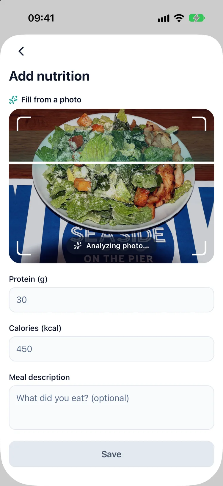
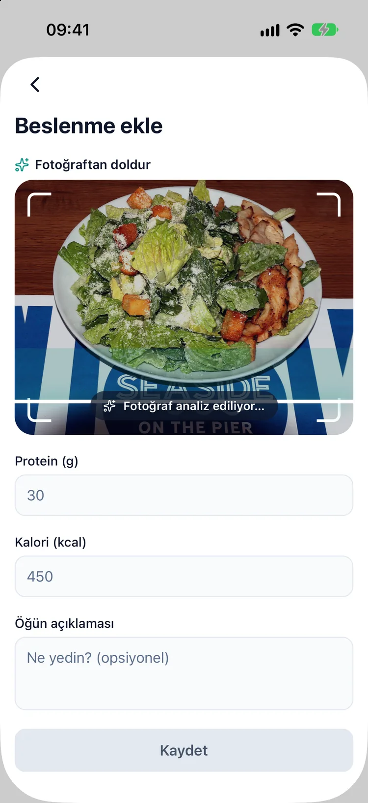
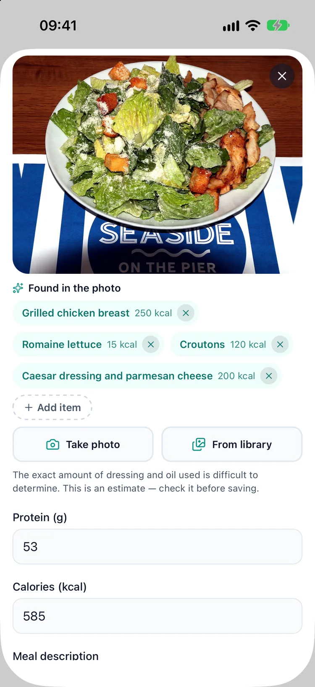
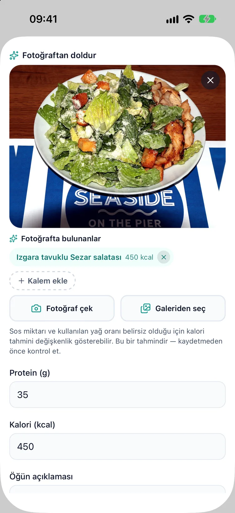
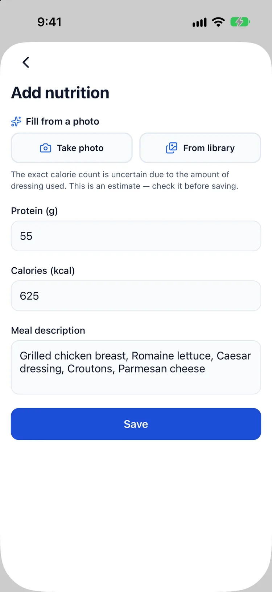
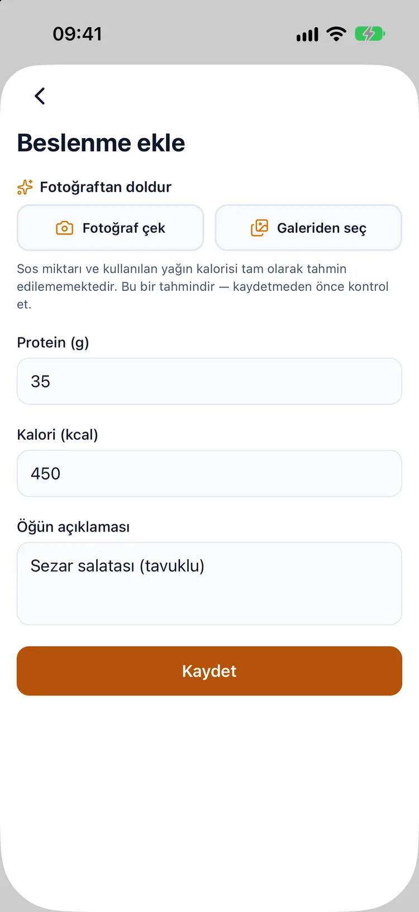

An AI calorie and protein counter for life on a GLP-1
GLP-1 kullanırken fotoğraftan kalori ve protein takibi
Smaller plates, a different question
On a GLP-1 medicine a lot of people find they simply eat less. When the portions shrink, the question shifts from how much is on the plate to what is on it, and protein is the number that comes up again and again in conversations about treatment. Weighing and typing in every meal is the kind of habit that lasts about a week. Taking a photo takes a few seconds, which is the whole reason this feature exists.
Tabak küçülünce soru değişiyor
GLP-1 ilacı kullanan pek çok kişi, kendiliğinden daha az yediğini fark ediyor. Porsiyonlar küçülünce soru "ne kadar yedim"den "tabakta ne var"a kayıyor ve tedavi konuşulurken en sık açılan konu protein oluyor. Her öğünü tartıp tek tek yazmak, ömrü bir hafta süren alışkanlıklardan. Fotoğraf çekmek ise birkaç saniye; bu özelliğin var olma sebebi de tam olarak bu.
How it works
Snap or pick a photo
Take a picture of the plate or choose one from your photo library. The first time, Dozify explains where the photo goes and asks for your consent before anything is sent.
Calories and protein, item by item
The AI lists what it sees on the plate, each item with an estimated calorie and protein figure, written in the language your app is set to. Dozify is available in 22 languages.
A draft, never a verdict
Every result arrives as an editable draft with the same line on it: "This is an estimate — check it before saving." Change a portion, add the sauce it missed, remove the thing that was never there. Nothing goes into your log until you tap save.
Next to your treatment, not in another app
Saved meals land in the same food and water log as the rest of your day, with a running protein total, inside the app that already holds your doses and your weight. One place to look instead of three.
Nasıl çalışıyor
Fotoğrafı çek ya da seç
Tabağın fotoğrafını çek ya da galeriden birini seç. İlk seferde Dozify fotoğrafın nereye gittiğini anlatır ve bir şey gönderilmeden önce onayını ister.
Kalem kalem kalori ve protein
Yapay zekâ tabakta gördüklerini sıralar; her kalem için tahmini kalori ve protein, uygulaman hangi dildeyse o dilde. Dozify 22 dilde kullanılabiliyor.
Hüküm değil, taslak
Her sonuç düzenlenebilir bir taslak olarak gelir ve üzerinde hep aynı not vardır: "Bu bir tahmindir — kaydetmeden önce kontrol et." Porsiyonu değiştir, atladığı sosu ekle, tabakta hiç olmayanı sil. Kaydet'e basana kadar günlüğüne hiçbir şey yazılmaz.
Başka uygulamada değil, tedavinin yanında
Kaydettiğin öğünler, günün geri kalanıyla aynı yemek ve su günlüğüne düşer; günlük protein toplamı da yanında. Hem de dozlarını ve kilonu zaten tutan uygulamanın içinde. Üç ayrı yere bakmak yerine tek bir yer.






What the app says about protein
Dozify's nutrition guide, inside the app, quotes a range of 1.2 to 1.6 g of protein per kg of body weight, and is plain about where that range comes from: nutrition guidance for weight loss, not the medicine's label. If you have kidney disease, your protein target is your doctor's to set and may be lower. The guide also suggests spreading protein across three or four meals rather than loading one, and names resistance exercise two or three times a week as the habit that consistently protects lean mass. Dozify does not prescribe a diet; the numbers that apply to you come from your clinician or dietitian.
Uygulama protein hakkında ne diyor
Dozify'ın uygulama içindeki beslenme rehberi, vücut ağırlığının kilogramı başına 1,2–1,6 g protein aralığını aktarır ve bu aralığın nereden geldiğini açıkça söyler: ilacın prospektüsünden değil, kilo vermeye yönelik beslenme önerilerinden. Böbrek hastalığın varsa protein hedefini doktorun belirler ve bu hedef daha düşük olabilir. Rehber ayrıca proteini tek öğüne yığmak yerine üç dört öğüne yaymayı önerir ve yağsız kütleyi tutarlı biçimde koruyan alışkanlık olarak haftada iki üç kez direnç egzersizini gösterir. Dozify diyet önermez; sana uyan rakamları doktorun ya da diyetisyenin verir.
Where it stops
It is an estimate made from a picture. A photo cannot see the oil in the pan, the sugar in the dressing or what is hiding under the rice, and portion size is the hardest thing to judge from above. Treat the figures as a starting point you correct, not a measurement. The analysis needs an internet connection, there is a daily limit per user, and the feature is part of Premium. You can always enter a meal by hand instead.
Nerede duruyor
Bu, bir fotoğraftan yapılmış bir tahmin. Fotoğraf tavadaki yağı, sosun içindeki şekeri ya da pilavın altında kalanı göremez; porsiyonu yukarıdan kestirmek de işin en zor kısmı. Rakamları ölçüm gibi değil, düzelteceğin bir başlangıç noktası gibi gör. Analiz internet bağlantısı ister, kullanıcı başına günlük bir sınır vardır ve özellik Premium'un parçasıdır. İstersen öğünü her zaman elle de girebilirsin.
Where the photo goes
Unlike the rest of your records, this feature sends something off your phone, so it is worth being exact. The photo you pick travels over an encrypted connection, through Dozify's own server, to Google Gemini, and the estimate comes back to your phone. Dozify does not store the photo. Your doses, weight, symptoms and other health records stay on the device as they always do, and if you never use the feature, no photo leaves the phone. The full detail is in section 5 of the privacy policy, and the wider picture is on the private tracker page.
Fotoğraf nereye gidiyor
Diğer kayıtlarının aksine bu özellik telefonundan dışarı bir şey gönderir; o yüzden tam olarak anlatmakta fayda var. Seçtiğin fotoğraf şifreli bağlantıyla, Dozify'ın kendi sunucusu üzerinden Google Gemini'ye gider; tahmin telefonuna geri döner. Dozify fotoğrafı saklamaz. Dozların, kilon, belirtilerin ve diğer sağlık kayıtların her zamanki gibi cihazında kalır; özelliği hiç kullanmazsan telefonundan hiçbir fotoğraf çıkmaz. Ayrıntının tamamı gizlilik politikasının 5. bölümünde, genel tablo ise gizli takip sayfasında.
Download on the App Store App Store'dan indir
Questions
Sorular
How accurate is the calorie count from a photo?
Fotoğraftan kalori hesaplama ne kadar doğru?
It is an estimate, and the app labels it as one. Portion size, cooking fat and hidden ingredients are hard to read from a picture. That is why the result is a draft you edit before saving rather than a number written straight into your log.
Bir tahmindir ve uygulama da onu tahmin olarak etiketler. Porsiyon büyüklüğü, pişirme yağı ve görünmeyen malzemeler fotoğraftan zor okunur. Sonucun doğrudan günlüğe yazılan bir rakam değil, kaydetmeden önce düzenlediğin bir taslak olmasının sebebi bu.
Is the AI meal photo free?
AI öğün fotoğrafı ücretsiz mi?
Your first photo analysis is free. After that it is part of Premium — start the 14-day free trial — together with the estimated medication-level curve and the doctor report. Dose logging and reminders are free permanently.
İlk fotoğraf analizi ücretsiz. Sonrasında Premium'un parçası (14 günlük ücretsiz deneme ile başlar); tahmini ilaç seviyesi eğrisi ve doktor raporuyla birlikte. Doz kaydı ve hatırlatıcılar ise kalıcı olarak ücretsiz.
Does Dozify keep my food photos?
Dozify yemek fotoğraflarımı saklıyor mu?
No. The photo is sent through Dozify's server to Google Gemini for the analysis and is not stored by the app. You are asked for your consent before the first use.
Hayır. Fotoğraf analiz için Dozify'ın sunucusu üzerinden Google Gemini'ye gönderilir ve uygulama tarafından saklanmaz. İlk kullanımdan önce onayın istenir.
Which language does it answer in?
Hangi dilde cevap veriyor?
The one your app is set to. Dozify is available in 22 languages, and the items come back named in that language, so the dish on your plate is called what you would call it.
Uygulaman hangi dildeyse o dilde. Dozify 22 dilde kullanılabiliyor ve kalemler o dilde adlandırılarak gelir; tabağındaki yemek, senin ona verdiğin adla görünür.
Does it work offline?
İnternetsiz çalışıyor mu?
The photo analysis needs an internet connection. The rest of Dozify, including dose logging and reminders, works offline.
Fotoğraf analizi internet bağlantısı ister. Doz kaydı ve hatırlatıcılar dahil Dozify'ın geri kalanı çevrimdışı çalışır.
Will it tell me how much I should eat?
Ne kadar yemem gerektiğini söylüyor mu?
No. It records what you ate. Calorie and protein targets are for you and your clinician to agree; the in-app guide explains where common protein ranges come from and when they do not apply.
Hayır. Ne yediğini kaydeder. Kalori ve protein hedefleri senin ve doktorunun birlikte kararlaştıracağı şeyler; uygulama içindeki rehber, sık duyulan protein aralıklarının nereden geldiğini ve hangi durumlarda geçerli olmadığını anlatır.
Read next
Guides, with their sources named: what GLP-1 actually is, water on a GLP-1 and when the tape moves and the scale does not.
Elsewhere in Dozify: the weight tracker, the estimated medication-level curve, the GLP-1 pill tracker and the side-effect journal.
Sonra şunlar
Kaynağı yazılı rehberler: GLP-1'in aslında ne olduğu, GLP-1 kullanırken su ve mezura kımıldarken tartı kımıldamadığında.
Dozify'ın diğer yanları: kilo takibi, tahmini ilaç seviyesi eğrisi, GLP-1 hap takibi ve yan etki günlüğü.